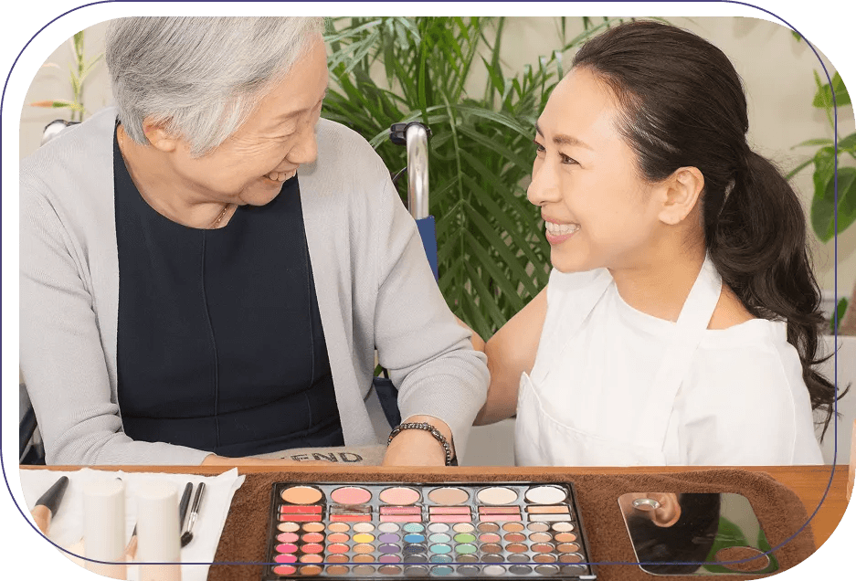
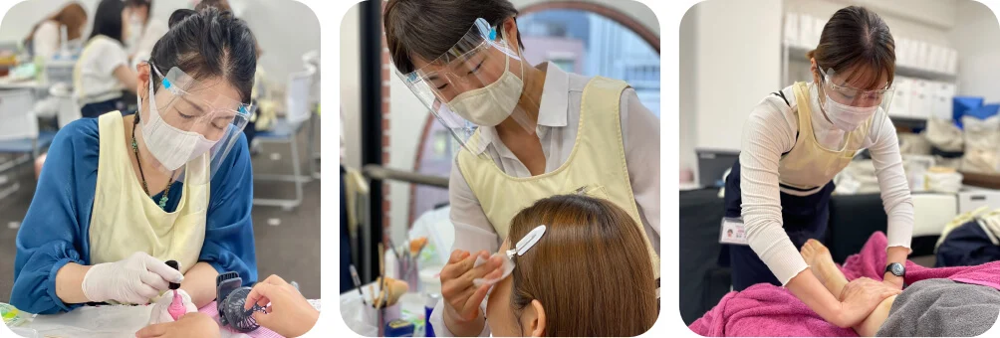
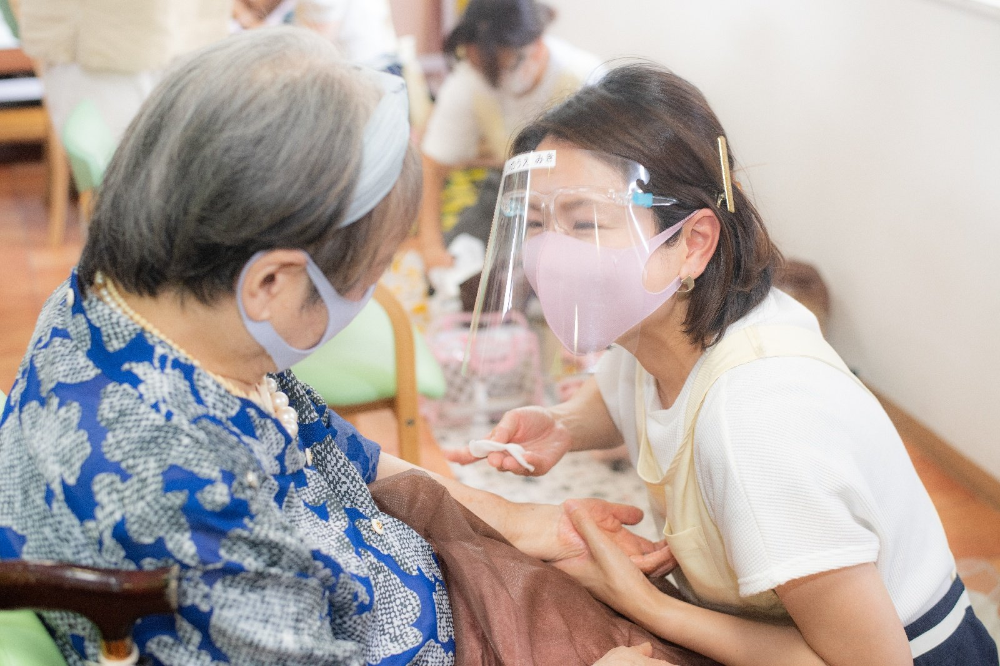

20:41PR｜介護美容研究所
あの投稿の、つづき。奈緒のスマホ
奈緒でも、美容の仕事なんて
したことなかったよね？
美咲うん。だから、学校で
基礎から学んだんだ。
その一歩を、基礎から学ぶ場所。
未経験から、高齢者に向けた美容と
コミュニケーションを学ぶ専門スクール。

技術だけじゃなくて、
声のかけ方も練習するんだね。

高齢者ケアの知識や認知症コミュニケーションも。
美容の技術と、相手への理解を一緒に学びます。

現場での関わりを経験しながら、
活動のための準備を進めます。
通学は
週1日東京・横浜・大宮・名古屋
心斎橋・梅田・福岡
曜日や期間は、希望する校舎・コースで確認。
営業ツールや発信など、活動に向けた学びも。
卒業後に登録できる施設紹介サービス
「care sweet」などのサポートがあります。
未経験の方も学べるケアビューティーのコースです。美容師・理容師免許を前提にした訪問美容とは異なります。受講条件は希望コースで確認できます。
コースによって異なります。最新のコース内容・通い方・学費総額と支払い方法は、資料や学校への相談で確認してください。
基礎から技術と高齢者への関わり方を学びます。これまでの経験や生活に合わせた学び方を、学校に相談できます。
私なら、どんなふうに
関われるんだろう。
次は、自分のこれからを。
コースで学べること、通い方、費用。
まずは資料を、自宅でゆっくり。